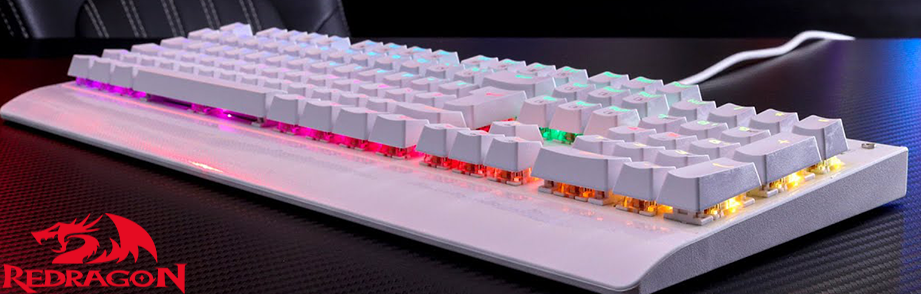
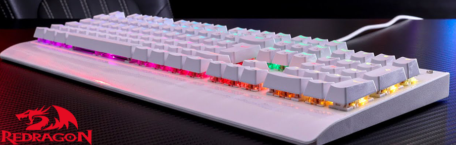

"Feito por gamers para gamers"
Teclados Mecanicos
Trazendo um Design moderno com pintura automotiva na cor branca, apoio de pulso texturizado e a aclamada iluminação RGB Chroma, o Dark Avenger Lunar White é o teclado perfeito para quem procura performance e beleza em um teclado mecânico.
HeadSets
Equipado com almofadas de alta qualidade com a aclamada tecnologia memory foam, o headset Helios proporciona horas de jogabilidade com extremo conforto.Além de toda sua incrível, e robusta, construção o headset Helios também impressiona com sua praticidade devido a seu microfone removível que torna-o uma opção versátil se adequando as mais variadas situações.
Mouses
Equipado com o novo Sensor Pixart PWM 3325 de 32000 DPI, o Redragon LoneWolf 2 é uma escolha de performance inigualável quem procura desempenho profissional em um mouse.
Desnvolvido por: Natan Klem